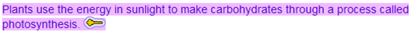
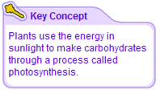

CLIPPS provides options for presenting key concepts to students to support individual differences.
1) Key concept as highlighted text with icon for immediate recognizability |
|
 |
|
2) Key concept in the sidebar to reduce the field |
3) The content expert agent reinforces and restates the key concept |
 |
|